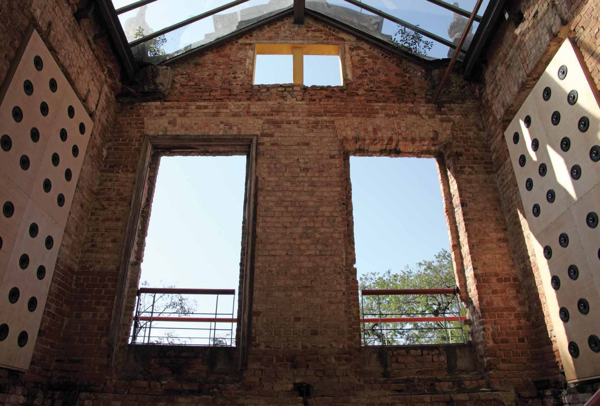
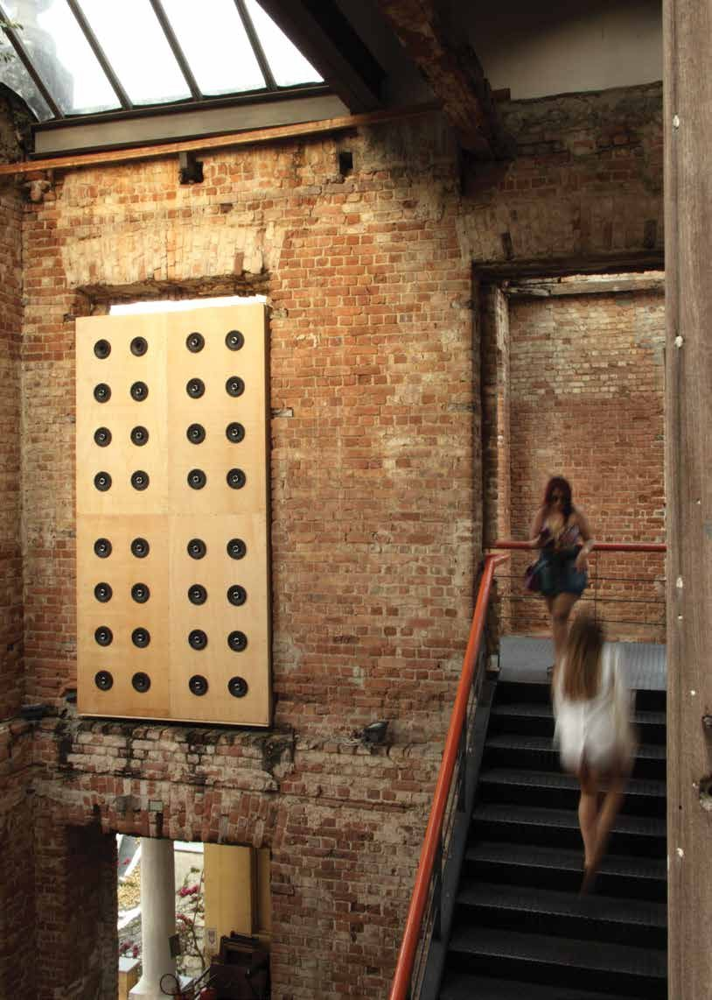

Muro de Som
Parque das Ruínas, City of Rio de Janeiro, 2016
Use headphones
Installation with two walls of 32 loudspeakers each, playing a wind sound made from the artist's breathing. Solo exhibition at Parque das Ruínas, Rio de Janeiro, 2016, curated by Guilherme Bueno.
- Award
- Parque das Ruínas, City of Rio de Janeiro, 2016
- Materials
- Two walls with 32 loudspeakers each, sound of wind
- Dimensions
- 2 walls, 330 × 170 cm
- Venue
- Parque das Ruínas, Rio de Janeiro
- Exhibition
- Muro de Som (2016)


